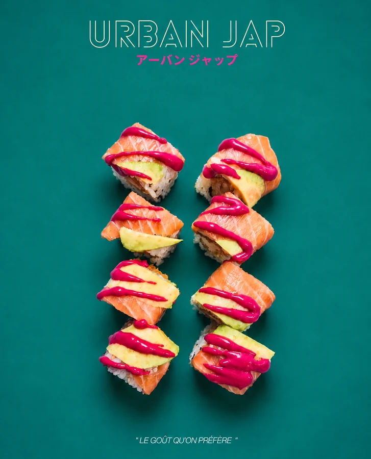

Les stars du sable ont leur tarif 😎
Vendredi 6 novembre · Urban Jap au TC Suzini · 18 h – 22 h
Anticipez votre commande pour garantir votre repas et éviter l’attente !

La carte du tournoi 🍱
Préparez votre pause gourmande avant de fouler le sable 😋

Le tournoi finit. L’appétit, jamais 😋
Retrouvez Urban Jap aussi hors tournoi : pokés, sushis & krousty à emporter.
Parking de Polina · lundi au vendredi · 11 h – 13 h 30
